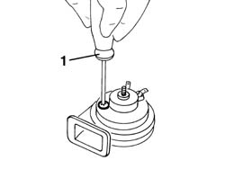

5550B34 horn tone - adjust
- Path
- Procedures > 55 ELECTRICAL EQUIPMENT > 5550 MANOEUVRING AND WARNING SIGNALS > 5550B horns > 5550B34 horn tone - adjust
- Kind
- repair procedure (removal / refitting; the operation number is the code)
- Applies to
- all engines; all production periods
- Interactive page
- https://sloeber94.github.io/elrnDB-a147/en/#/3025573
Applies to: all engines; all production periods
7055B42 Additional FRONT WHEEL ARCH (one), left or right - R.R. (right side).
5550B30 l/h or r/h horn (one) - r+r
1. Work on the special screw to adjust the tone of the horn.

Applies to: all engines; all production periods
Test the horn to check that the tone is correct.
5550B30 l/h or r/h horn (one) - r+r
7055B42 Additional FRONT WHEEL ARCH (one), left or right - R.R. (right side).